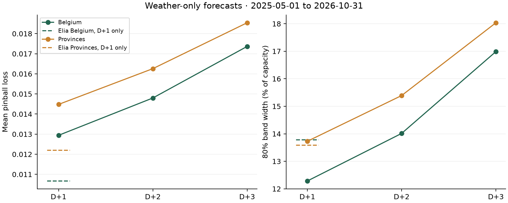

METHOD / SOURCES / REPRODUCIBILITY
A forecast with an inspectable margin.
Four weather models. Three quantiles. Calibration that respects the forecast cutoff.
Two models, two uses
The arbitrary-location tool runs the weather-only model locally in your browser. It needs coordinates and installed capacity, with no local generation history. It assumes a typical fleet mix. Optional tilt and compass inputs apply the geometric adjustment below. Shading and individual installation losses remain outside this adjustment; an optional site inverter AC limit clips the combined output.
The public Belgian ledger compares Penumbra grid with Elia's day-ahead forecast. Grid uses Elia's forecast inputs and trailing forecast errors as well as weather. Its stronger backtest scores do not describe the arbitrary-location tool.
From weather to power
The v2 grid model adds fresh GFS 00z of D-1 from the NOAA archive and D-1 morning measured output before the cutoff. It trains on history from 2021. The browser weather-only model uses the inputs below.
We request ECMWF IFS 0.25°, ICON Seamless, GFS Seamless and Météo-France Seamless from the Open-Meteo Previous Runs API, using shortwave radiation, direct radiation, cloud cover and 2 m temperature with _previous_day2, _previous_day3 or _previous_day4 for D+1, D+2 or D+3. Inputs are aligned in UTC. Each horizon has its own model and calibration. Models load when selected.
NOAA solar-position formulas and the Haurwitz clear-sky model define a 15-minute grid. Hourly radiation represents the preceding hour. We divide it by that hour's four-step clear-sky mean, clip the clearness index to [0, 1.5], and use it to recover quarter-hour radiation. Cloud and temperature are interpolated. Ensemble summaries ignore missing values; rows below the horizon are dropped.
Three LightGBM quantile models predict P10, P50 and P90 as shares of capacity. Negative predictions are clipped and quantiles sorted. Lower and upper bands receive separate calibration shifts for six bins defined by elevation and raw band width. The exported shifts use a trailing 60-day pool of Belgian provincial outcomes. Their through-date and the model month appear beside the forecast.
The exported JavaScript evaluator is checked against Python fixtures for every feature, raw quantile and calibrated bound, with an absolute tolerance of 0.0001. The model is downloaded when the forecast first runs and uses the browser's normal HTTP cache.
Panel arrays and inverter limit
Add up to three arrays with a shared kW or MW unit. Tilt is measured from horizontal (0–90°), and azimuth clockwise from north: east 90°, south 180°, west 270°. One array at 35° south with no inverter limit leaves the original fleet forecast exactly unchanged.
For other orientations, we request global_tilted_irradiance from the Open-Meteo Forecast API, for the chosen geometry and a 35° south reference. Open-Meteo azimuth is 0° south, −90° east and +90° west; we subtract 180° from the compass bearing. Hourly radiation is a preceding-hour mean, so all four quarter-hours use the ratio for their enclosing hour. We clamp each ratio to [0, 3], using 1 below 20 W/m² reference irradiance. Each calibrated fleet quantile is multiplied by the array capacity and ratio. We sum the arrays, then clip each site quantile at the optional AC limit, in the same unit.
If GTI is unavailable, a visible note identifies the clear-sky fallback. It uses the existing Haurwitz irradiance and solar geometry, Erbs decomposition, Spencer extraterrestrial irradiance and an isotropic sky with albedo 0.2. Below 3° elevation direct irradiance is zero. The same ratio limits apply. Adjusted bands have no site-specific calibration.
The multi-array and AC-clipping approach is adapted from rany2/open-meteo-solar-forecast (MIT; licence). We do not add temperature derating because the model already learned fleet output and it would double count temperature effects.
Days, best hours and saved sites
Today shows remaining quarter-hours using the D+1 model and its calibration shifts; it has no separate D+0 validation. Tomorrow, D+2 and D+3 retain their original models and shifts. Day cards sum P10/P50/P90 power × 0.25 hours in local time. Tomorrow’s best-hours suggestion searches continuous 2–3 hour windows for the largest summed P10 energy, with ties favouring the shorter window then the earliest start. This is an estimate, not a guaranteed energy floor, and is included in CSV and JSON exports.
Saved sites, names and settings stay in localStorage on this device. Share links include all arrays and the AC limit; old single-array links still work. If storage is blocked or full, forecasts and share links remain available. The installable app caches its shell, downloaded models, recent weather responses and the last calculated forecast. Offline, it displays that saved forecast with its save time and date; it does not refresh weather. Only the last opened configuration is available offline. Clear site data to remove these copies.
Read the uncertainty correctly
A nominal P10–P90 band targets 80% coverage at each daylight quarter-hour. The slider chooses the quantile at 1 − confidence, using piecewise linear interpolation through P10, P50 and P90. At 90% confidence, the commitment line is P10. This is marginal confidence at each interval; it does not guarantee that every interval, or the daily total, will be met.
Daily energy estimates sum quarter-hour power × 0.25 hours. Summing interval quantiles does not produce calibrated daily energy quantiles. Hourly table values are average power, including overnight zeros. Times use the location's timezone; UTC offsets distinguish repeated hours at daylight-saving changes. Downloads retain UTC timestamps.
The tool was trained in Belgium and tested in Great Britain. GB coverage was 75.4% for a nominal 80% band. Outside 35–60°N and −15–30°E, treat it as a first estimate. Even within those bounds, individual sites may differ from the regional fleet.
Evidence and causality
The 359-day test covers 2025-11..2026-10. Inputs include four weather models from runs at least 48 hours old, fresh GFS 00z of D-1 from the NOAA archive, and D-1 morning measured output before the 11:00 cutoff. Training history starts in 2021. Other output lags stop at D-2. The test window was used twice: first by v1, then by v2, which was chosen on validation and frozen in 6e8d5b8 before its single run. The first frozen version was v1 (2d11d22). Paired daily pinball differences use 2,000 block bootstrap draws. No GB outcomes were used in training or calibration for the portability experiment.
Quartz on 48 h ICON is the public open-source baseline. Comparisons use common rows where specified. See the full tables and confidence intervals, or download the exact evidence data.
Horizons
Weather-only models. Fixed features and parameters for all horizons. 2025-05-01 to 2026-10-31. Common daylight rows: 321,625 across 549 days. Monthly refits and rolling scoped calibration use a gap of 2, 3 or 4 days. Full-day lags end before the issue day; the frozen weather specification uses no output lags. Elia is a D+1 reference only. Its score uses rows with a published day-ahead forecast.
| Horizon | Scope | Pinball | MAE | Cover 80 | Width |
|---|---|---|---|---|---|
| D+1 | Belgium | 0.012942 | 4.19% | 79.07% | 12.28% |
| D+1 | Provinces | 0.014479 | 4.68% | 79.47% | 13.73% |
| D+2 | Belgium | 0.014799 | 4.80% | 78.62% | 14.01% |
| D+2 | Provinces | 0.016258 | 5.26% | 79.29% | 15.39% |
| D+3 | Belgium | 0.017364 | 5.54% | 79.13% | 16.99% |
| D+3 | Provinces | 0.018541 | 5.93% | 79.67% | 18.04% |

What the ledger records
Each dated JSON file records its target date, issue time, model version, model month, mode and the SHA-256 hash of the preceding file's original bytes. Your browser checks the chain on load, and any change to a linked file breaks it. The public Git history adds a timestamp to every commit, so anyone can check when each forecast appeared. Elia published no 11:00 forecast for 28 October 2026, the first full day after it moved to new datasets, so that date has no entry. Its forecasts for 29 to 31 October appeared later and are filed as backfill.
Live forecasts precede outcomes. Backfill forecasts are retrospective and can include outcomes already available when they were generated. Scores are Belgian daylight quarter-hours: mean pinball loss across P10/P50/P90, median MAE, interval coverage and interval width. Totals weight by scored rows and always keep live and backfill separate. Pending outcomes remain unscored.
Reproduce locally
From the project repository, after installing its documented Python environment and downloading the source datasets:
# Validation pipeline (test results are already recorded)
PYTHONPATH=src .venv/bin/python src/backtest.py val
# Great Britain portability experiment
PYTHONPATH=src .venv/bin/python src/portability.py
# Browser / Python parity and ledger tests
node --test site/test/*.test.mjs
# Static preview, no build step
python3 -m http.server --directory site 8765On macOS without Homebrew libomp, run the Python commands with DYLD_LIBRARY_PATH=$PWD/.venv/lib/python3.11/site-packages/sklearn/.dylibs. EXPERIMENTS.md records every run.
Data sources and credits
- Weather data by Open-Meteo.com, CC BY 4.0. Previous Runs API documentation; place search documentation. Geocoding uses the Open-Meteo service and its GeoNames-derived place data.
- Fresh GFS: NOAA archive, 00z of D-1.
- Solar data: Elia Open Data, Elia Transmission Belgium SA, CC BY 4.0, converted to a share of monitored capacity, including monitored capacity, measured production and day-ahead forecasts.
- Sheffield Solar PV_Live for Great Britain regional generation and capacity.
- Quartz, the open-source solar forecasting baseline; LightGBM for quantile regression.
- uPlot 1.6.32, vendored from the exact npm distribution. MIT licence: licence file. No remotely loaded scripts or fonts.
- Leaflet 1.9.4 map library, BSD-2-Clause (licence), with OpenStreetMap contributors tiles and attribution. Map code loads only when opened; tile failures do not block forecasts.
- Figures: Matplotlib. Slides: PptxGenJS. Browser and screenshot tooling: Playwright.